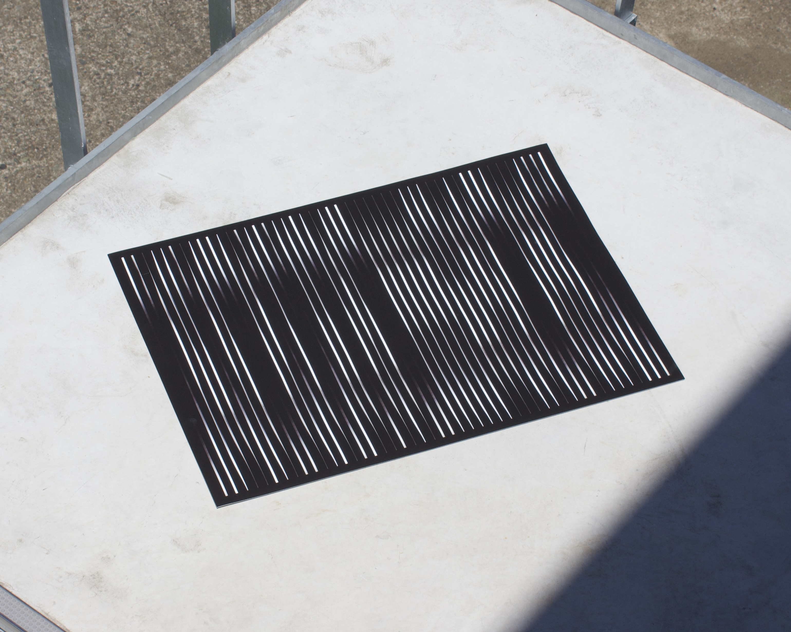

Graphic Poster of Desire Visualization
欲しいものや手に入れたものを写真に収めようとする習慣をビジュアル化しました。
[Information Design]
D,P : Nozomi Terashima
2023


欲しいものや手に入れたものを写真に収めようとする習慣をビジュアル化しました。
[Information Design]
D,P : Nozomi Terashima
2023